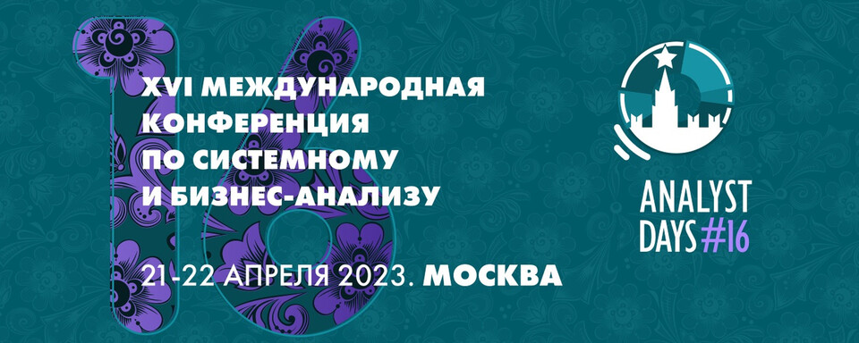
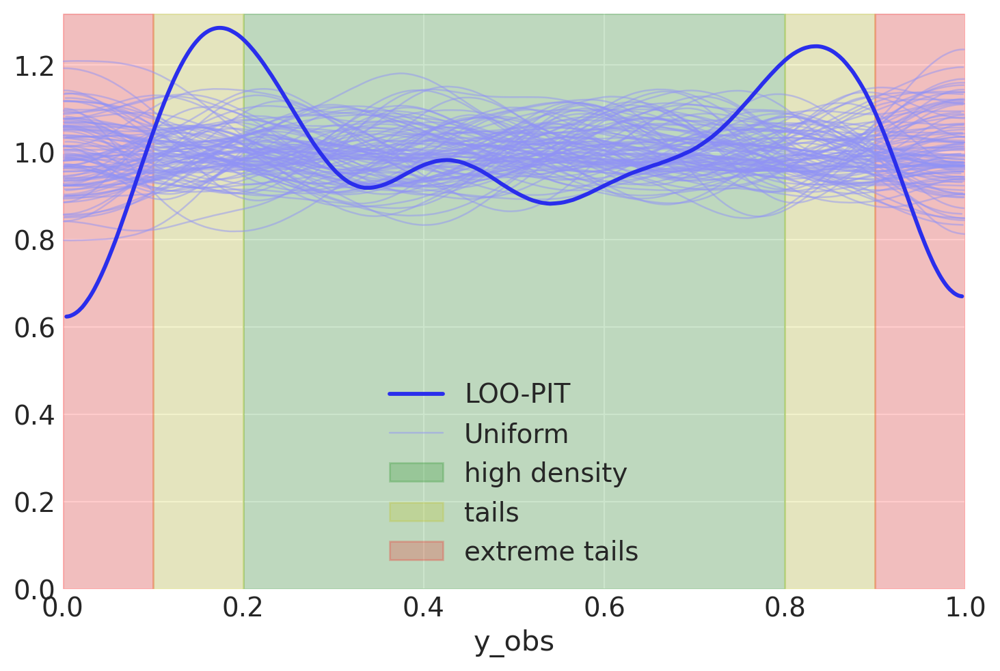

Опубликовано в 2023
Bayes in the Wild
- 04 June 2023
I talk about the Bayesian approach to wide range of problems. Show how it is related to traditional methods in ML and what tasks benefit from an alternative view.
Bayesian AB Testing
- 21 April 2023
I talk about how Bayesian AB testing can drive conclusions from data. There is always the whole pipeline of decision making process: panning, execution and delivery. Each of the stages benefits from domain knowledge about the experimental setting. In the talk I explain how this can be framed from a Bayesian perspective.
The R2D2M2 Prior, the Awwwesome Linear Regression
- 01 February 2023
There is an awesome paper that puts a simple idea of interpretable linear regression to an absolute. The Intuitive Joint Priors for Bayesian Linear Multilevel Models: The R2D2M2 prior. The idea resonates with me a lot, since I admire interpretable priors and the ability to describe the model, not an ability to explain.
